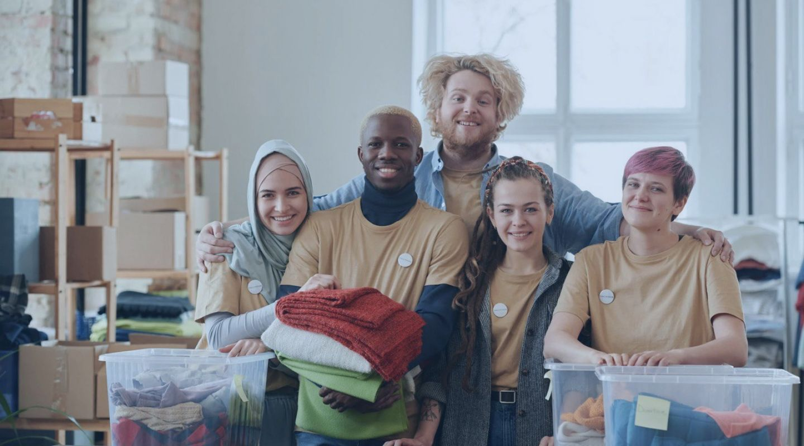

![Логотип Internship programs.](data:image/svg+xml,%3csvg%20width='52'%20height='52'%20viewBox='0%200%2052%2052'%20fill='none'%20xmlns='http://www.w3.org/2000/svg'%3e%3crect%20width='52'%20height='52'%20rx='26'%20fill='white'/%3e%3cpath%20d='M11.9184%2019.8006C11.0667%2020.4073%2010.5675%2021.6921%2011.5085%2023.2283C12.4495%2024.7645%2025.8931%2035.1336%2026.3859%2035.4215C26.8789%2035.7097%2027.3721%2035.7576%2028.6264%2034.7496C29.8813%2033.7413%2040.3653%2025.8656%2040.6358%2025.6287C41.0663%2025.2518%2041.1735%2024.3325%2040.6358%2023.9003C40.6358%2023.9003%2027.9346%2033.4052%2027.5188%2033.7895C27.1031%2034.1735%2026.4561%2033.5495%2026.5776%2032.7335C26.6996%2031.9172%2026.7894%2031.8211%2028.4026%2030.5731C30.0158%2029.3248%2039.1622%2022.3928%2039.5772%2022.0864C40.0471%2021.7391%2040.0584%2021.1258%2039.2887%2020.5834C38.2185%2019.8294%2026.6538%2011.6047%2026.2669%2011.3168C25.879%2011.0287%2025.3421%2010.7669%2024.5356%2011.3429C23.7291%2011.919%2013.4831%2018.6858%2011.9184%2019.8006Z'%20fill='%23316DC2'/%3e%3cpath%20d='M26.3859%2036.4333C26.0624%2036.2442%2020.1639%2031.7154%2015.8795%2028.1892V35.5413C15.8762%2040.9082%2030.9969%2043.7757%2036.0062%2037.1781V30.1512C32.9289%2032.4764%2029.3294%2035.1965%2028.6264%2035.7611C27.3721%2036.7692%2026.8789%2036.7212%2026.3859%2036.4333Z'%20fill='%23316DC2'/%3e%3cpath%20d='M32.7845%2028.3718C32.7845%2028.3718%2035.0327%2029.5021%2035.1926%2034.0505L34.1034%2033.7503L33.232%2035.6014C32.8633%2030.6207%2030.8557%2029.8985%2030.8557%2029.8985L32.7845%2028.3718Z'%20fill='%2398B8E6'/%3e%3c/svg%3e)
Проект "стажировка" - повышение квалификациимолодых специалистов
Глобальный профессиональный опыт обучения за рубежом
Погрузитесь в академическую программу, проходя практику в разных городах, ощущая настоящий студенческий стиль жизни!

 Волонтёрские программы - внесите свой вклад в общество
Возможности для преподавания, органического сельского хозяйства, устойчивого образа жизни и другое.
Программы стажировок в крупнейших компаниях мира
Получите незаменимый опыт работы в ведущих мировых компаниях и государственных организациях.
about
programs
grant
news
FAQ
reviews
contacts
form
footer